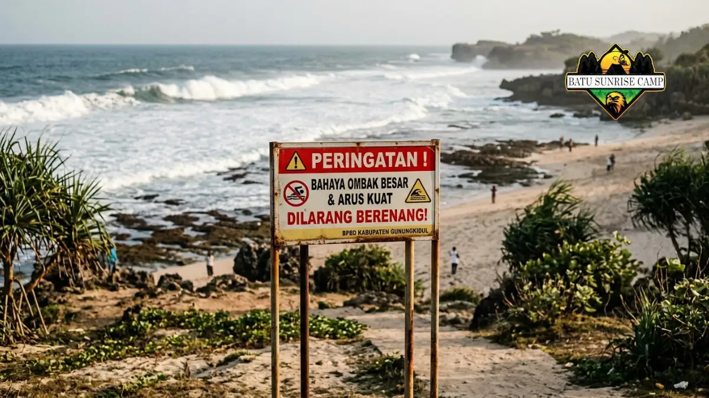

Tips aman camping di pantai Jogja meliputi memilih lokasi resmi, mendirikan tenda jauh dari air pasang, menghindari berenang di ombak besar, dan memantau cuaca BMKG.
- Titik tenda aman berada di pasir datar, jauh dari garis pasang, dan terlindung dari angin.
- Ombak pantai selatan berasal dari Samudra Hindia dan sering besar.
- Berenang hanya di area yang ditetapkan pengelola dan dengan pengawasan.
- Periksa prakiraan BMKG dan batalkan rencana saat cuaca ekstrem.
- Bawa pulang sampah dan patuhi aturan api unggun.
Artikel ini berisi informasi umum. Arahan petugas pantai, tim SAR, dan pengelola setempat selalu menjadi acuan utama, dan kondisi di lapangan dapat berubah sewaktu-waktu.
Bagaimana cara memilih titik tenda yang aman di pantai?
Titik tenda aman berada di pasir datar, jauh di atas garis air pasang, terlindung dari angin, dan tidak berada di bawah tebing rawan runtuh.
Tanda garis air pasang dapat dikenali dari batas pasir basah, sampah laut, dan kumpulan rumput laut di bagian atas pantai. Dirikan tenda di atas batas tersebut, bukan di dekat air meski tampak kering.
Pantai di Gunungkidul banyak dikelilingi tebing karang, sehingga jangan mendirikan tenda tepat di bawah dinding tebing karena risiko batu jatuh.
Pohon peneduh seperti cemara dapat membantu memecah angin, tetapi jauhi dahan yang rapuh. Hadapkan pintu tenda menjauhi arah angin utama, gunakan pasak panjang, dan ikat tali ke benda kokoh. Di pantai resmi, tanyakan kepada pengelola area mana yang diperbolehkan dan dinilai aman.
Bagaimana membaca ombak dan pasang sebelum camping?
Ombak pantai selatan Jogja berasal dari Samudra Hindia dan kerap besar, sehingga pengunjung sebaiknya mengamati pola ombak, membaca rambu, dan mengikuti arahan petugas.
Luangkan sepuluh hingga lima belas menit untuk mengamati pantai sebelum mendirikan tenda. Perhatikan seberapa jauh ombak menjangkau pasir, apakah ada ombak susulan yang jauh lebih besar, dan di mana petugas memasang rambu.
Pantai Nglambor dikenal bergelombang tenang dan cocok untuk snorkeling, sedangkan Pantai Wediombo dikenal dengan ombak besar yang ideal bagi peselancar. Dua pantai yang berdekatan bisa memiliki karakter laut yang sangat berbeda.
Jangan memunggungi laut dalam waktu lama, terutama saat berfoto di tepi air atau di atas karang. Gelombang besar dapat datang tanpa tanda yang jelas.
Saat bulan purnama atau bulan baru, pasang umumnya lebih tinggi, sehingga jarak aman tenda dari garis air perlu ditambah.

Papan peringatan bahaya ombak besar dan arus kuat dari BPBD Kabupaten Gunungkidul yang terpasang di tepi pantai selatan sebagai panduan keselamatan pengunjung.
Apakah aman berenang di pantai selatan Jogja?
Berenang di pantai selatan Jogja berisiko karena ombak besar dan arus dapat kuat, sehingga hanya dilakukan di area yang ditetapkan pengelola dan dalam pengawasan petugas.
Tidak semua pantai selatan layak untuk berenang. Banyak lokasi memiliki dasar laut yang curam, karang tajam, dan arus balik.
Pengunjung yang tidak mahir berenang atau tidak mengenal kondisi setempat sebaiknya cukup bermain di bibir pantai pada bagian yang dangkal dan jauh dari ombak pecah.
Beberapa pantai berteluk atau berlaguna dapat lebih bersahabat, tetapi tetap perlu menanyakan kondisi terkini kepada petugas.
Jangan berenang di malam hari, setelah mengonsumsi alkohol, atau saat sendirian. Bila terseret arus, jangan melawan secara langsung: tetap tenang, mengapung, dan minta pertolongan. Anak-anak harus diawasi dalam jarak dekat setiap saat.
Bagaimana mengantisipasi cuaca dan musim saat camping?
Antisipasi cuaca dengan memeriksa prakiraan BMKG sebelum berangkat, menghindari camping saat hujan lebat atau cuaca ekstrem, dan menyiapkan alternatif jadwal bila peringatan muncul.
BPBD Gunungkidul memperpanjang status siaga darurat bencana hidrometeorologi hingga 31 Maret 2026 untuk mengantisipasi cuaca ekstrem, tanah longsor, dan banjir selama libur Lebaran.
Informasi ini menunjukkan bahwa risiko cuaca benar-benar diperhatikan pemerintah daerah pada periode tertentu. Cek prakiraan cuaca BMKG satu hingga dua hari sebelum berangkat dan sekali lagi pada hari keberangkatan.
Jalan menuju pantai terpencil dapat licin saat hujan dan rawan longsor kecil. Pada musim kemarau, risiko lain muncul berupa terik dan ketersediaan air.
Pada akhir Juli 2026, Suara.com melaporkan kemarau melumpuhkan 329 telaga air di Gunungkidul, sehingga pengunjung sebaiknya tidak mengandalkan sumber air alami dan membawa air minum sendiri.
Bagaimana menjaga keselamatan kelompok dan barang?
Keselamatan kelompok dijaga dengan tidak berkemah sendirian, memberi tahu keluarga lokasi dan jadwal pulang, membawa P3K, menyimpan nomor darurat 112, dan mengamankan barang berharga.
Bentuk kelompok minimal tiga orang agar bila satu orang sakit, ada yang menemani dan ada yang mencari bantuan.
Bagikan lokasi pantai, nama pengelola, dan jam pulang kepada keluarga. Catat nomor pengelola atau petugas pos serta simpan nomor darurat nasional 112.
Siapkan perlengkapan P3K berisi plester, antiseptik, obat pribadi, obat maag atau anti-mual, dan perban. Gunakan senter dan hindari berjalan di karang saat gelap.
Simpan dompet, ponsel, dan kunci kendaraan dalam wadah kedap air di dalam tenda, dan jangan meninggalkan barang berharga tanpa penjagaan. Bila ada anggota kelompok yang sakit parah, segera hubungi petugas dan jangan menunda pencarian bantuan medis.
Bagaimana etika camping yang menjaga kebersihan pantai?
Etika camping pantai berarti membawa pulang semua sampah, tidak merusak karang atau vegetasi, membatasi api unggun sesuai aturan pengelola, dan menjaga ketenangan malam hari.
Sampah adalah masalah nyata di pantai Gunungkidul. Pemerintah daerah bahkan menggelar aksi bersih pantai di kawasan Pantai Sundak, Kapanewon Tepus, pada peringatan Hari Lingkungan Hidup 2026, sebagaimana dilaporkan ANTARA Jogja.
Pengunjung dapat berkontribusi dengan memilah sampah dan membawanya pulang bila tidak tersedia tempat sampah.
Jangan mencabut tanaman pantai, mengambil karang, atau mengganggu satwa. Gunakan api unggun hanya bila diizinkan dan di area yang ditunjuk, lalu padamkan sepenuhnya dengan air sebelum tidur.
Batasi suara musik pada malam hari agar pengunjung lain dan warga sekitar tidak terganggu. Hormati adat dan aturan setempat, termasuk larangan tertentu di kawasan yang dianggap sakral. Panduan lokasi dapat dilihat di pantai dengan tempat camping terbaik di Jogja.
Kapan sebaiknya rencana camping dibatalkan?
Rencana camping sebaiknya dibatalkan saat ada peringatan cuaca ekstrem, ombak sangat tinggi, larangan petugas, kondisi tubuh tidak fit, atau jumlah peserta dan perlengkapan belum memadai.
Pembatalan bukan kegagalan, melainkan keputusan keselamatan. Peringatan resmi dari BMKG atau pemerintah daerah harus lebih diutamakan daripada rencana liburan. Jika petugas pantai melarang aktivitas tertentu atau menutup area, patuhi tanpa menawar.
Perhatikan juga kondisi kelompok sendiri. Anggota yang sakit, kelelahan, atau baru pulih sebaiknya tidak dipaksakan ikut.
Perlengkapan yang tidak lengkap, misalnya tidak ada tenda tahan angin atau air minum cukup, juga alasan kuat untuk menunda.
Data kunjungan menunjukkan bahwa pantai bisa sangat ramai, dengan puncak 67.721 pengunjung pada 31 Mei 2026 versus 11.105 pada hari terendah. Jika lokasi terlalu padat dan petugas kewalahan, memindahkan jadwal ke hari kerja adalah pilihan yang lebih bijak.
Kesimpulan
Camping aman di pantai Jogja bertumpu pada tiga hal: memilih titik tenda di atas garis pasang, menghormati kekuatan ombak Samudra Hindia, dan memantau cuaca BMKG.
Berkemahlah dalam kelompok, bawa P3K dan air bersih, simpan nomor 112, serta bawa pulang sampah. Batalkan rencana bila ada peringatan cuaca atau larangan petugas.